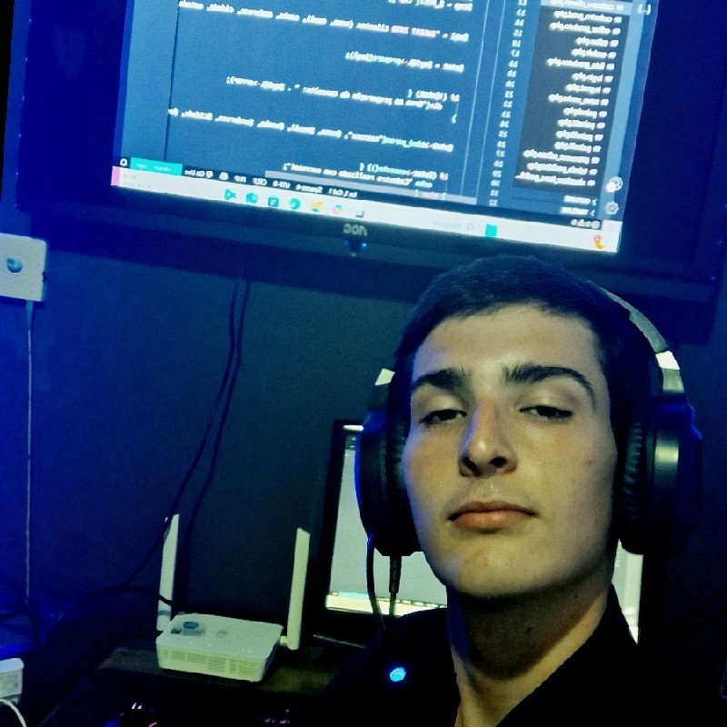

Desenvolvedor de Sistemas

Sou técnico em Desenvolvimento de Sistemas formado pela ETEC Elias Nechar. Tenho facilidade em aprender novas tecnologias, sou organizado, comunicativo e apaixonado por tecnologia. Busco aplicar meus conhecimentos para resolver problemas e criar soluções funcionais. Atualmente, estou me aprimorando em desenvolvimento web e sistemas embarcados.
ETEC Elias Nechar – Técnico em Desenvolvimento de Sistemas (2024)
Em breve, estarei adicionando projetos desenvolvidos em HTML, PHP e Arduino.
Email: brunobaio65@gmail.com
GitHub: github.com/brunobaio
LinkedIn: linkedin.com/in/brunobaio